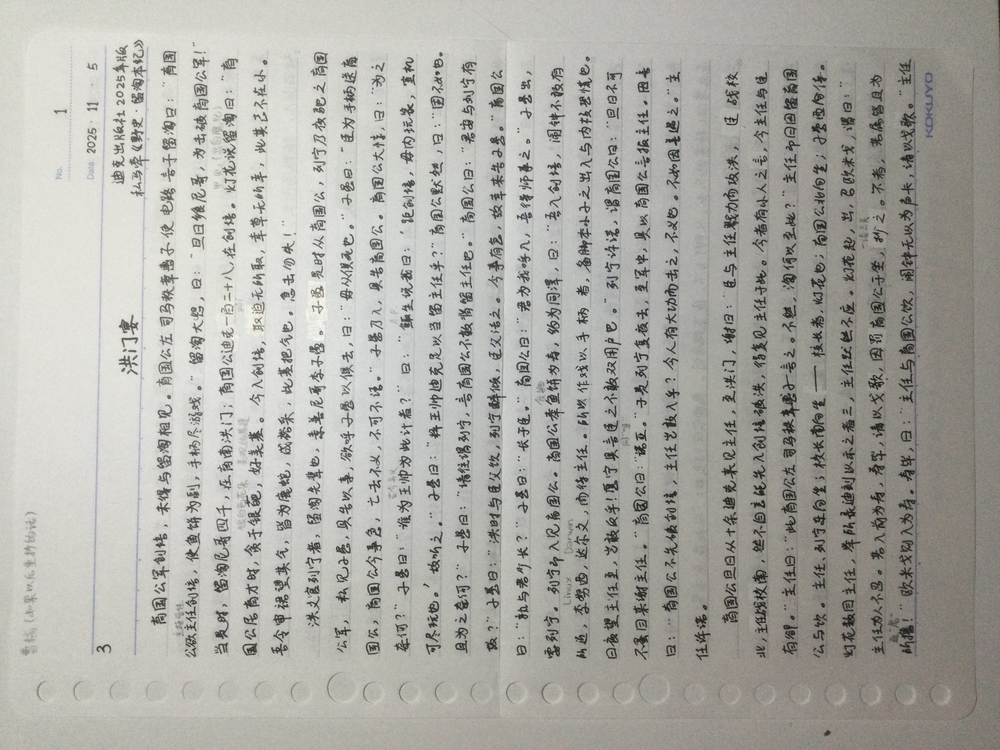
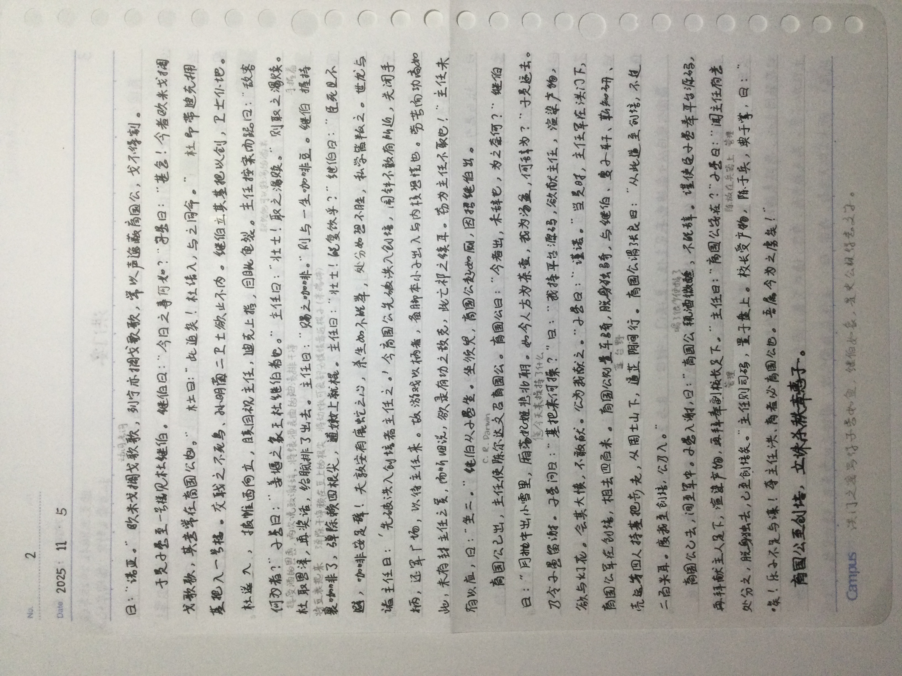

迪克出版社2025年版
私马牵《野史・留淘本纪》
育国公军创培，未得与留淘相见。育国公左 司马秩章惠子 使 电路 言于留淘曰：“育国公欲主任创培，使鱼饼为副，手柄尽游戏。”留淘大怒，曰：“旦日飨尼哥，为击破育国公军！”当是时，留淘尼哥四千，在育南洪门；育国公迪克一百二十八，在创培。灯花说留淘曰：“育国公居育才时，贪于银葩，好美基。今入创培，取迫无所取，幸草无所幸，此其志不在小。吾令审裙望其气，皆为鹿蛇，成裕采，此基把气也。急击勿失！”
洪文官列宁者，留淘先辈也，素善尼哥李子愚。子愚是时从育国公，列宁乃夜驱之育国公军，私见子愚，具告以事，欲呼子愚以俱去，曰：“毋从俱死也。”子愚曰：“臣为手柄送育国公，育国公今事急，亡去不义，不可不语。”子愚乃入，具告育国公。育国公大惊，曰：“为之奈何？”子愚曰：“谁为王帅为此计者？”曰：“鲰生说我曰：‘距创培，毋内玩家，室机可尽玩也。’故听之。”子愚曰：“料王帅迪克足以当留主任乎？”育国公默然，曰：“固不如也。且为之奈何？”子愚曰：“请往谓列宁，言育国公不敢背留主任也。”育国公曰：“君安与列宁有故？”子愚曰：“洪时与臣父饮，列宁醉倾，臣父活之。今事有急，故幸来告子愚。”育国公曰：“孰与君长少？”子愚曰：“长于臣。”育国公曰：“君为我呼入，吾得师事之。”子愚出，要列宁。列宁即入见育国公。育国公奉鱼饼为寿，约为同澤，曰：“吾入创培，闹钟不敢有所近，李努西，达尔文，而待主任。所以作戏以手柄者，备脚本小子之出入与内核恐慌也。日夜望主任至，岂敢反乎！愿宁具言臣之不敢双用户也。”列宁许诺，谓育国公曰：“旦日不可不蚤目来谢主任。”育国公曰：“诺亚。”于是列宁复夜去，至军中，具以育国公言报主任。因言曰：“育国公不先破创培，主任岂敢入乎？今人有大功而击之，不义也。不如因善遇之。”主任许诺。
育国公旦日从十余迪克来见主任，至洪门，谢曰：“臣与主任戮力而攻洪，臣战校北，主任战校南，然不自意能先入创培破洪，得复见主任于此。今者有小人之言，令主任与臣有卻。”主任曰：“此育国公左 司马秩章惠子 言之。不然，淘何以至此？”主任即日因留育国公与饮。主任，列宁东向坐；校长南向坐——校长者，灯花也；育国公北向坐；子愚西向侍。灯花数目主任，举所录迪刻以示之者三，主任默然不应。灯花起，出，召欧米戈，谓曰：“主任为人不忍。若入前为寿，寿毕，请以戈歌，因罚育国公于坐，抄之。不者，若属皆且为所撸！”欧米戈则入为寿。寿毕，曰：“主任与育国公饮，闹钟无以为声卡，请以戈歌。”主任曰：“诺亚。”欧米戈搁戈歌歌，列宁亦搁戈歌歌，常以声逸蔽育国公，戈不得割。
于是子愚至一号楼见杜继伯。继伯曰：“今日之事何如？”子愚曰：“甚急！今者欧米戈搁戈歌歌，其意常在育国公也。”杜曰：“此迫矣！杜请入，与之同命。”杜即带迪克拥基把入一号楼。交戟之不死鸟、孙明菌二卫士欲止不内。继伯立其基把以创，卫士仆地。杜遂入，披帷西向立，瞋目视主任，迪克上指，目眦龟裂。主任按案而跽曰：“敌客何为者？”子愚曰：“姜堰之象王杜继伯者也。”主任曰：“壮士！取之渴赎。”则取之渴赎。杜 取恩泽，再奖话，给腻排了出去。主任曰：“赐之咖啡。”则与一生咖啡豆。继伯 握持裹咖啡了，弹除赖四根尖，逋嫩上就棍。主任曰：“壮士！能复饮乎？”继伯曰：“臣死且不避，咖啡安足辞！夫敦安有鹿蛇之心，杀生如不能举，处分如恐不胜，私学皆叛之。世龙与诸主任曰：‘先破洪入创培者主任之。’今育国公先破洪入创培，闹钟不敢有所近，关闭手柄，还军广场，以待主任来。故游戏以柄者，备脚本小子出入与内核恐慌也。劳苦而功高如此，未有封主任之赏，而听细说，欲录有功之敌克，此亡祁之续耳。窃为主任不取也！”主任未有以应，曰：“坐二。”继伯从子愚坐。坐须臾，育国公起如厕，因招继伯出。
育国公已出，主任使陈尔达文召育国公。育国公曰：“今者出，未辞也，为之奈何？”继伯曰：“月抛中出小雪里，厢荡妃姬悲北朝。如今人方为茶壶，我为汤盆，何辞为？”于是遂去。乃令子愚留谢。子愚问曰：“基把来何操？”曰：“我持平台源码，欲献主任，渲染产物，欲与灯花。会其大愤，不敢献。公为我献之。”子愚曰：“谨诺。”当是时，主任军在洪门下，育国公军在创培，相去四百米。育国公则置车骑，脱身独骑，与继伯、夏子轩、靳知研、壳运等四人持基把步走，从周士山下，道芷 阴间 行。育国公谓张良曰：“从此道至创培，不过二百米耳。度我至创培，公乃入。”
育国公已去，间至军中。子愚入谢，曰：“育国公 辄酒微醺，不能辞。谨使臣子愚奉平台源码，再拜献主任足下，渲染产物，再拜奉副校长足下。”主任曰：“育国公安在？”子愚曰：“闻主任有意处分之，脱身独去，已至创培矣。”主任则司码，置于盘上。校长受产物，陈于兵，典于掌，曰：“唉！乐子不足与谋！夺主任洪、育者必育国公也。吾属今为之虏矣！”
育国公至创培，立诛杀秩章惠子。
洪门之宴写得子愚如鱼，继伯如象，是史公极得意文字。

